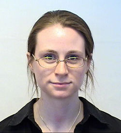

People
Director
Solomon G. Diamond, PhD
Solomon.G.Diamond@Dartmouth.edu
Telephone: (603) 646-1311 | Fax: (603) 646-3856
Solomon Gilbert Diamond is a native of Bath, New Hampshire. He received his AB in engineering sciences from Dartmouth College, Hanover, NH, USA in 1997 and then a BE from the Thayer School of Engineering at Dartmouth in 1998. He received a PhD in engineering sciences from Harvard University in 2004 and conducted post-doctoral training at the Martinos Center for Biomedical Imaging, Massachusetts General Hospital, Charlestown, MA, USA. He joined the faculty at Dartmouth College half-time in 2007 and full-time in 2008 as an Assistant Professor at the Thayer School of Engineering. His research applies noninvasive functional neuroimaging technologies to study human brain physiology. He employs multimodal data fusion to bridge neural electromagnetic signals with vascular hemodynamics with the goal of improving the early diagnosis and treatment monitoring for patients with neurodegenerative diseases or a history of brain injury. Professor Diamond is a member of IEEE, the American Society for Engineering Education and Tau Beta Pi.
Group Members
Paolo Giacometti, PhD candidate Brad Ficko, PhD candidate
Tanveer Talukdar, PhD candidate Alison Stace-Naughton, Research Assistant |
Past Members
 Katherine L. Perdue, PhD
Broc A. Burke, MD-PhD
Ted Huppert, PhD postdoctoral research associate in 2007. Dr. Huppert is currently an Assistant Professor of Radiology at the University of Pittsburgh. |